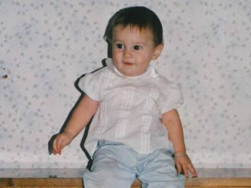
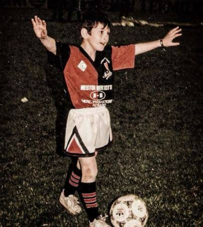
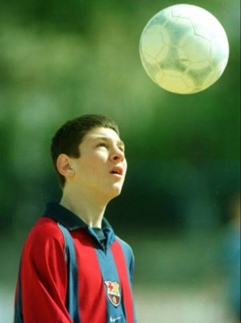
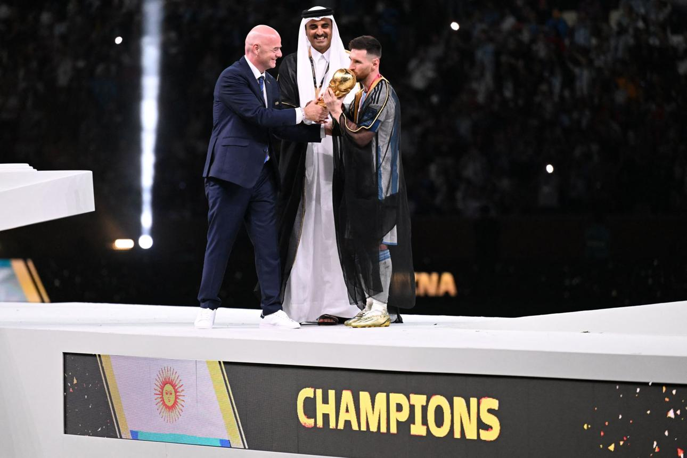
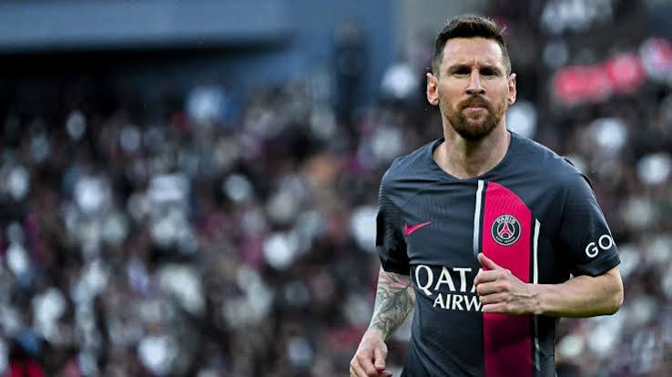
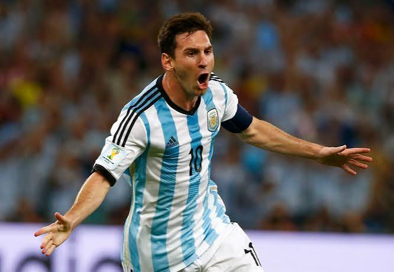
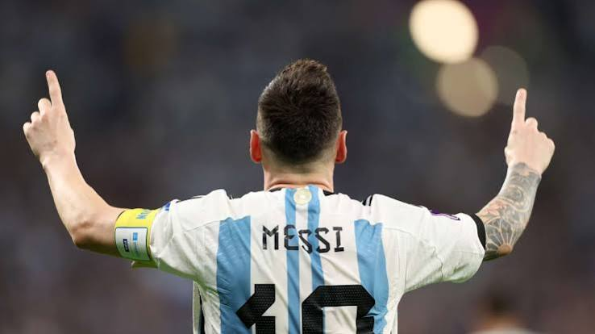
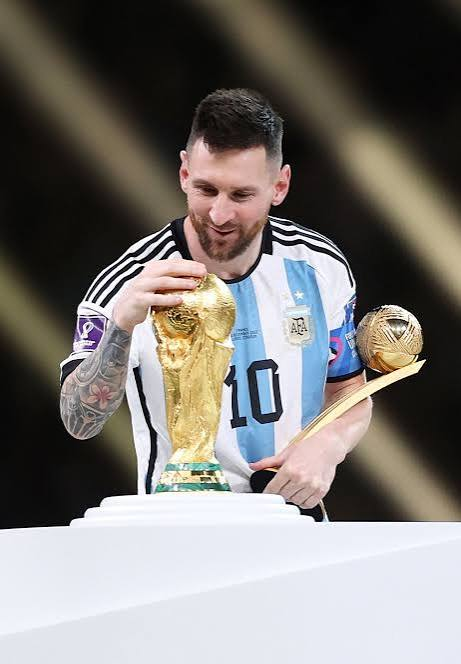

Rosario
Born in Rosario in 1987, Messi grew up with a football at his feet. Even as a child, his talent was impossible to ignore.
Every great story begins somewhere. Lionel Messi's story began in Rosario, Argentina, and became one of the most extraordinary journeys in the history of sport.

Born in Rosario in 1987, Messi grew up with a football at his feet. Even as a child, his talent was impossible to ignore.

Messi's first football home was Newell's Old Boys. There he developed the passion and creativity that would later amaze the world.

At only 13 years old, Messi moved to Spain. Barcelona saw something special and gave him the opportunity to chase his dream.
Over the following years, Messi became the face of FC Barcelona, winning league titles, Champions League trophies, Ballon d'Or awards, and setting records that once seemed impossible.



Despite enormous expectations and criticism, Messi never gave up on his dream of winning with Argentina. His perseverance became one of the defining parts of his legacy.


In Qatar 2022, Messi completed football's greatest story by lifting the FIFA World Cup. For Argentina, it was a moment generations had dreamed about. For Messi, it was the crowning achievement of an unforgettable career.
Throughout his career, Messi has won multiple Ballon d'Or awards, league championships, domestic cups, continental trophies, and international titles with Argentina. He became the all-time leading scorer for both FC Barcelona and the Argentina national team while consistently redefining what was possible on a football field.
His combination of vision, dribbling, creativity, finishing, and leadership has allowed him to remain at the highest level of the sport for nearly two decades.
Lionel Messi's legacy is about more than goals, assists, or trophies. It is about dedication, humility, resilience, and inspiring millions of people around the world to believe in their dreams.